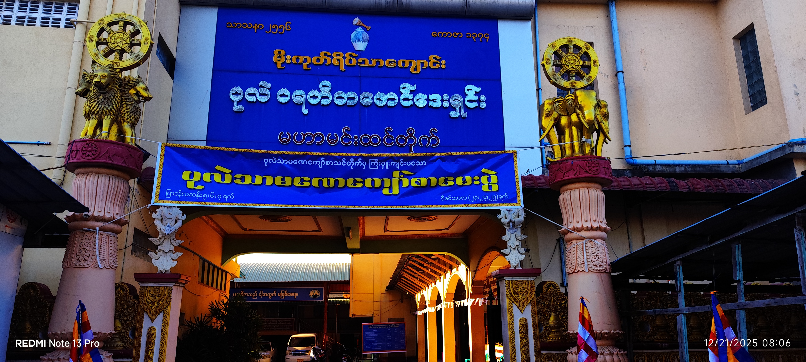
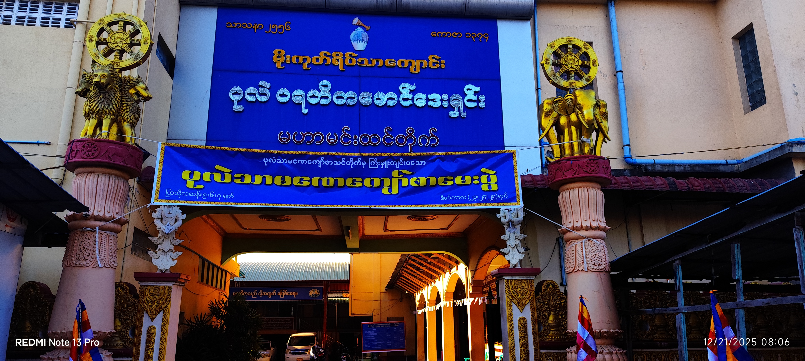

-ပုလဲသာမဏေကျော်စာသင်တိုက် ပဓာနနာယကဆရာတော် ဘဒ္ဒန္တပညာသိရီလင်္ကာရသည် (၁၃၈၆)ခုနှစ်တွင် စတင်တည်ထောင်ခဲ့သော "ပုလဲသာမဏေကျော်အသင်း"ကို ပထမအကြိမ်အဖြင့်
သာသနာနှစ်(၂၅၆၉)ခုနှစ်၊ ကောဇာသက္ကရာဇ် (၁၃၈၇)ခုနှစ်၊ပြသိုလ်လဆန်း(၅)ရက်၊(၆)ရက်၊(၇)ရက်နေ့များ၌ (၃)ရက်တိတိ စတင်ကျင်းပခဲ့ပါသည်။
ပထမအကြိမ်အဖြင့် စတင်ကျင်းပရာ၌ ဖြေဆိုရန် စာရင်းပေးသွင်းသည့်အရေအတွက်မှာ ()ပါးနှင့် လာရောက်ဖြေဆိုသူ ()ပါးရှိပြီးလျှင် အောင်မြင်သူ ()ပါးရှိခဲ့ပါသည်။
စာအောင်ဆုနှင်းသဘင်ပွဲကိုလည်း ပြာသိုလ်လဆန်း(၈)ရက်နေ့နံနက် (၉)နာရီတွင် အောင်လက်မှတ်နှင့် စာအောင်ဆုတို့ကိုဆက်ကပ် လှူဒါန်းခဲ့ပါသည်။
စာမေးပွဲ မဖြေဆိုမှီကာလမှစ၍ ဖြေဆိုစဉ်ကာလ,ဖြေဆိုပြီးကာလနှင့် စာဖြေသံဃာတော်များ မိမိတို့ဒေသအသီးသီးသို့ မပြန်ကြွသေးသော ကာလများ၌ တည်းခိုခြင်း,အာရုံဆွမ်းနှင့် နေ့ဆွမ်းဆက်ကပ်ခြင်းများကို
လိုလေသေးမရှိ ပြည့်စုံစွာ စီမံဆောင်ရွက်ပေးပါသည်။ပုလဲသာမဏေကျော်စာမေးပွဲကို နှစ်စဉ် ကျင်းပမည်ဖြစ်သောကြောင့် ဒေသအသီးသီးမှ စာဖြေသာမဏေများသည် ဤ "Website Cv Form" မှဖြစ်စေ,
လူကိုယ်တိုင် လာရောက်၍ဖြစ်စေ ကြိုတင်စာရင်းပေးသွင်းနိုင်ပါသည်။ဆက်သွယ် အကြောင်းကြားခြင်းတို့ကို ပုလဲသာမဏေကျော်စာသင်တိုက် "Facebook Page chat box,Viber,Phone,
Emailjs" တို့မှ ပြုလုပ်နိုင်ပါသည်။ ကျောင်းတိုက်နှင့် စာမေးပွဲအသင်းအတွက် လှူဒါန်းလိုပါကလည်း "ဆက်သွယ်လှူဒါန်းရန်" section ၌ ဖော်ပြထားပါသည်။
ပုလဲသာမဏေကျော်အသင်း၏ ဩဝါဒါစရိယဆရာတော်များ,နာယကဆရာတော်များ,ပုစ္ဆက-စာစစ်ဆရာတော်များမှာ အောက်ပါအတိုင်းဖြစ်ပါသည်။
ဩဝါဒါစရိယဆရာတော်များ
၁။ ဘဒ္ဒန္တဝိလာသဂ္ဂ(တိုက်အုပ်ဆရာတော်)
၂။ ဘဒ္ဒန္တပညာဝံသ(ပုလဲဆရာတော်)
နာယကဆရာတော်များ
၁။ ဦးကုဏ္ဍလာလင်္ကာရာဘိဝံသ (မစိုးရိမ်တိုက်သစ်၊ ဓမ္မဝေဒဂူကျောင်း)
၂။ ဦးပါကဋာလင်္ကာရာဘိဝံသ (ဝဏ္ဏိတာရာမကျောင်းတိုက်၊ ရန်ကုန်)
၃။ ဦးဣန္ဒာစက္ကာလင်္ကာရာဘိဝံသ (ဇိနောဒယကျော်းတိုက်၊ ရန်ကုန်)
၄။ ဦးနန္ဒမဉ္ဇူလင်္ကာရ (ပါဠိတက္ကသိုလ်ညောင်တုန်းကျော်းတိုက်၊ ဗဟန်း၊ ရန်ကုန်)
၅။ ဦးပညာဓဇာလင်္ကာရ (ရတနာပုံကျောင်း၊ ရန်ကုန်)
ပုစ္ဆက-စာစစ်ဆရာတော်များ
(၁)ဦးကုဏ္ဍလာလင်္ကာရာဘိဝံသ (မစိုးရိမ်တိုက်သစ်၊ ဓမ္မဝေဒဂူကျောင်း)၊ (၂)ဦးပါကဋာလင်္ကာရာဘိဝံသ (ဝဏ္ဏိတာရာမကျောင်းတိုက်၊ ရန်ကုန်)၊
(၃)ဦးဣန္ဒာစက္ကာလင်္ကာရာဘိဝံသ (ဇိနောဒယကျော်းတိုက်၊ ရန်ကုန်)၊ (၄)ဦးဝိလာသဂ္ဂါလင်္ကာရနှင့် စာချဆရာတော်များ (တိပိဋကဂန္ဓာရုံကျောင်း၊ ရန်ကုန်)၊
(၅)ဦးစန္ဒိမာ (ငါးထပ်ကြီး၊ ရန်ကုန်)၊ (၆)ဦးသူရိယ (ရတနာကံလှကျောင်း၊ ရန်ကုန်)၊
(၇)ဦးပညာသိရီလင်္ကာရ (မဟာမင်းထင်တိုက်၊ ပုလဲသာမဏေကျော်စာသင်တိုက်)၊(၈)ဦးတေဇာနန္ဒာလင်္ကာရ (မဟာမင်းထင်တိုက်၊ ပုလဲသာမဏေကျော်စာသင်တိုက်)၊
(၉)ဦးပညာသီဟ (မဟာမင်းထင်တိုက်၊ ပုလဲသာမဏေကျော်စာသင်တိုက်)၊ (၁၀)ဦးပညာသာမိ (မိုးထားတိုက်၊ မှန်တန်းကျောင်း)။
 

.png)